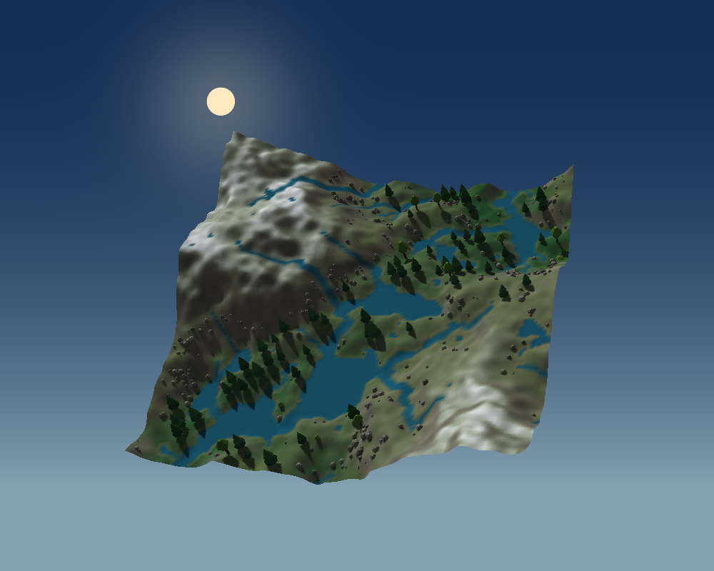
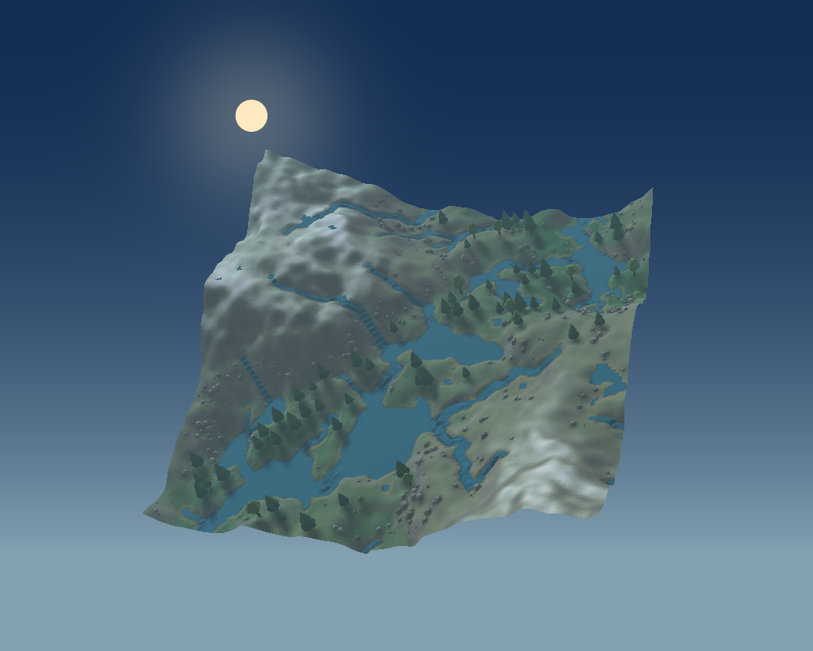
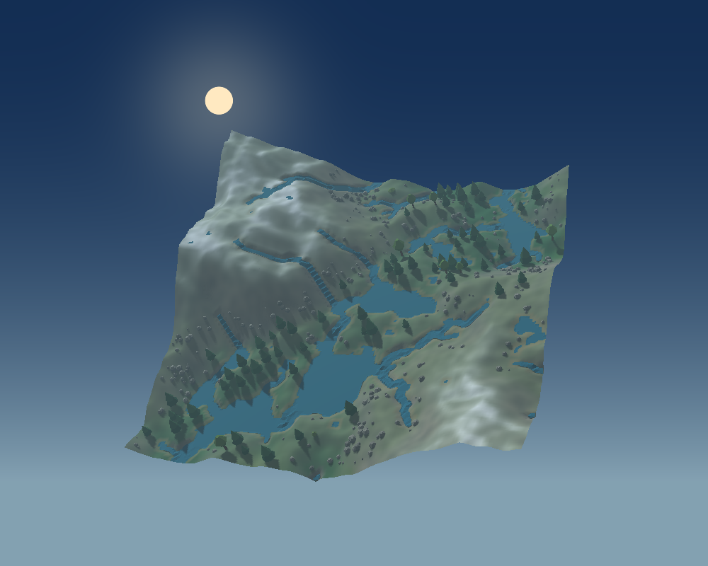

Одна карта, один ракурс — семь состояний визуального обновления. Нажмите изображение для полного размера. Файлы .terrain.json открываются в приложении через «Открыть проект…».

Группы камней и неоднородный снежный покров.
Дымка подчёркивает расстояние до склонов.
Поверхность воды построена отдельно от земли.
Углубление русел в рабочей копии высот.

Та же сцена, карта теней 256×256.
Исходный рельеф для сравнения.

40 итераций переноса материала, сила 0.45.